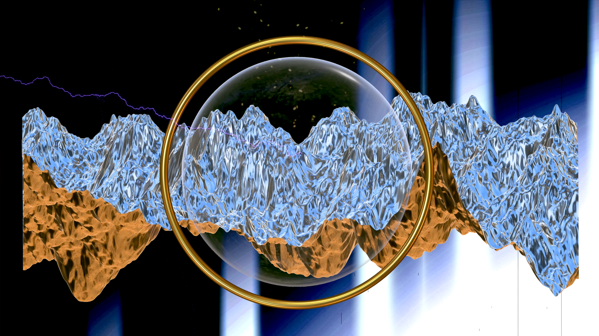
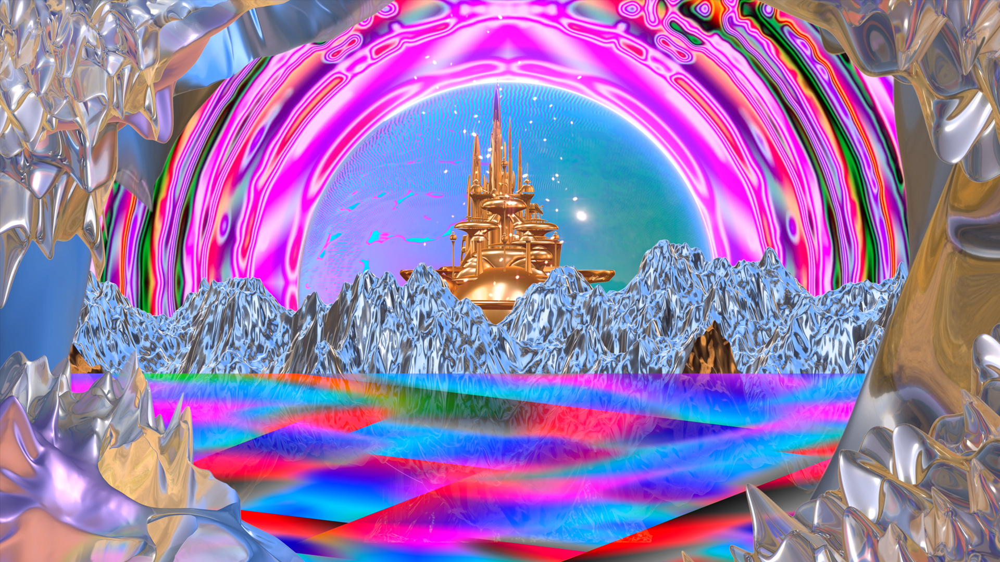
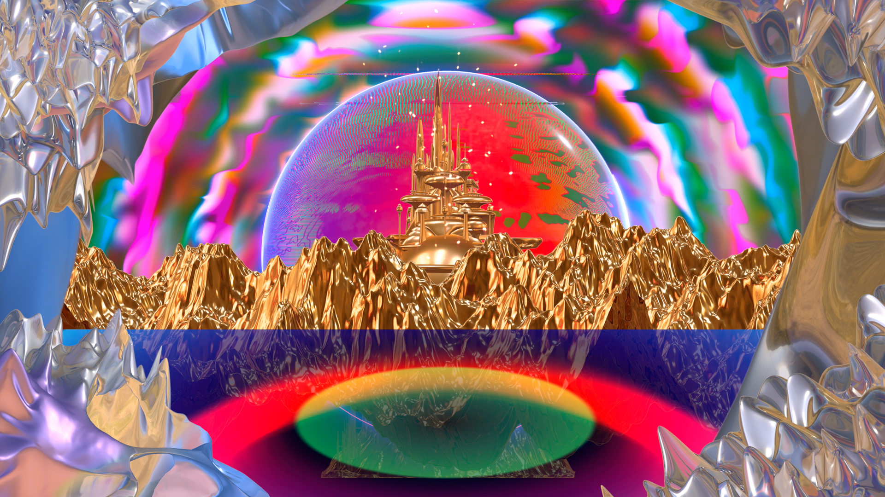
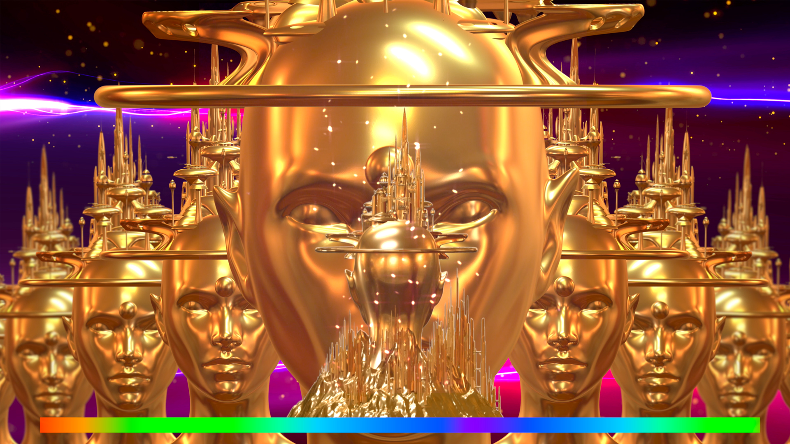
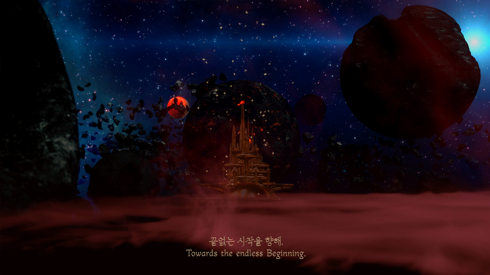
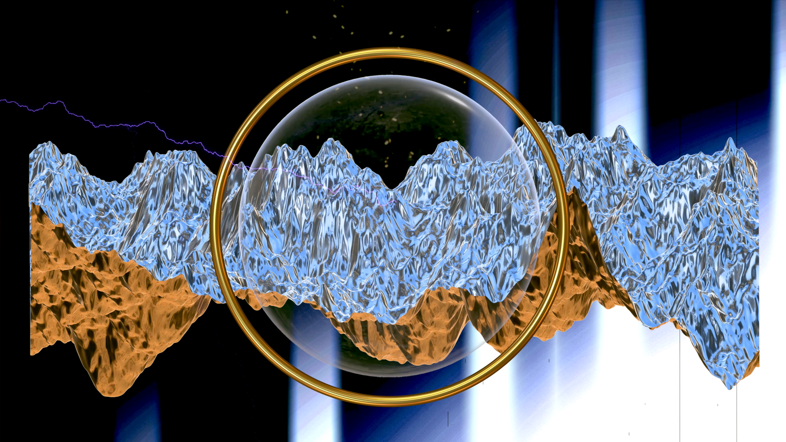
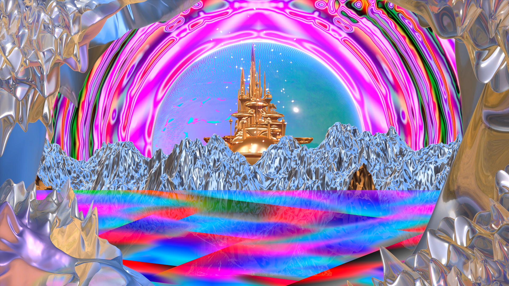
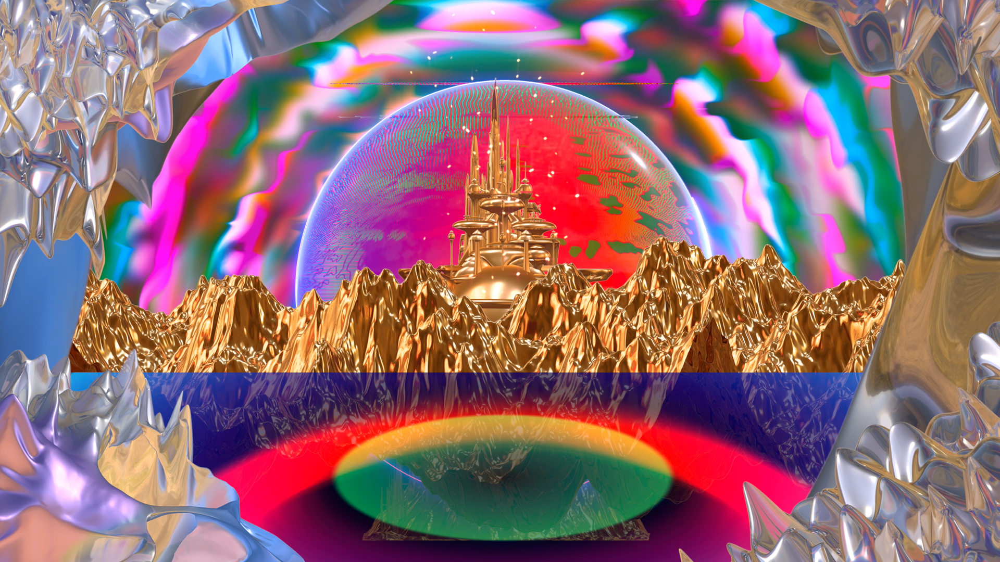
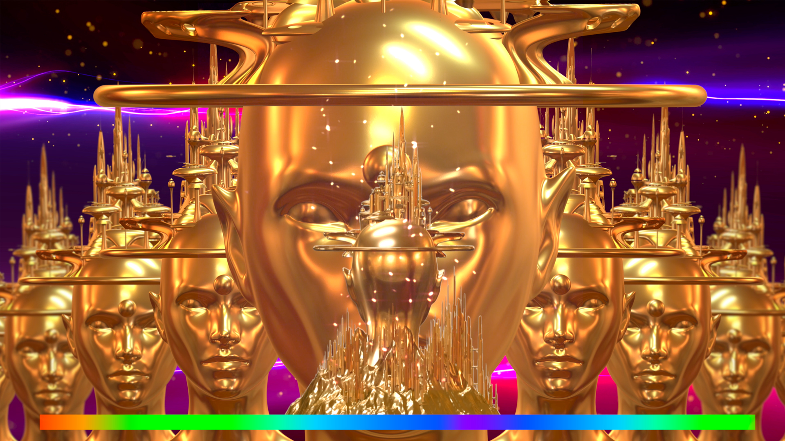
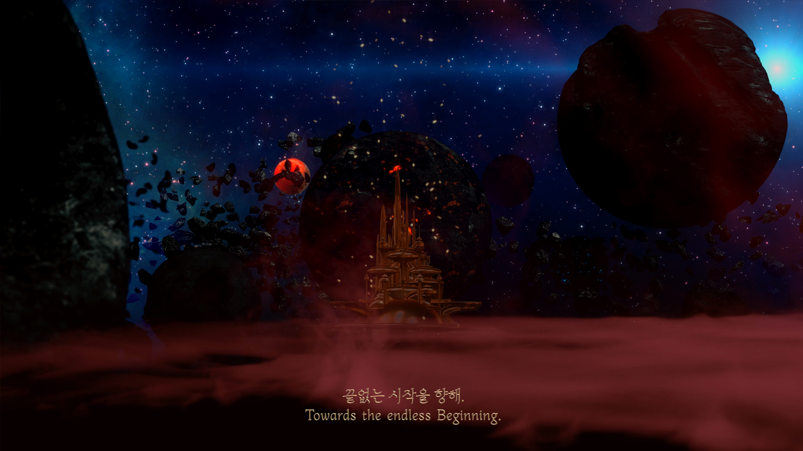

-
흔들리는 나왕 합판 책상 사이에서도 영민한 작품은
탄생합니다. XT-6와 에어맥스 95 사이 서로 닿지 않을 것 같은
6개의 시간도 교차점이 있더군요. 찢어지는 소음과 습기 찬
창호가 송구스럽게, 이곳이 고매한 공기로 가득 찬 것을 알고
있었나요? 결국 모든 것은 빗속의 눈물처럼 사라질 것이라는
오랜 친구의 농담 같은 말은 비로소 사그라들겠네요.
고맙습니다.
축하합니다!
-
열렬히 응원하는 마음을 담아,
2022년 1월 7일
더배곳 기둥 박찬신 드림
*
‘BOOOOOOM’ 붐은 ‘증가, 발전, 성황’이라는 의미를 가지고 있습니다. 그동안 6명의 배우미들은 더배곳이라는 같은 시작점에서 다양한 매체를 넘나들며 세밀한 작업으로 에너지를 응축해왔습니다. 이번 맺음전에서는 일러스트・사운드・영상・글꼴・공간・웹이라는 각자 다른 매체를 통해 에너지를 펼쳐 보이고자 합니다. 이는 파주타이포그라피배곳 더배곳 마친보람 맺음전 《BOOOOOOM》이라는 노력의 결과물이 됩니다.
-
The term “boom” is defined as a sudden increase or rapid
growth or development. Through the use of various media, a
group of six students of the Deobaegot came together to
explore and create artwork to portray the concept of
“boom.” The result of their combined efforts and different
perspectives is displayed in this PaTI Deobaegot graduation
exhibition. The students utilized a combination of
illustrations, sounds, videos, fonts, space, and web design
to integrate their individual perspectives in this project
titled “BOOOOOOOM”.
-
디자인팀 Design Team
김종희 Jonghee Kim
박정견 Jeonggyeon Park
박창규 Changgyu Park
-
홍보팀 Promotional Team
김보람 Boram Kim
나세원 Sewon Na
박태준.파노 Taejun Park.Pano
-
회계 Accounting
나세원 Sewon Na
-
포스터 Poster
김종희 Jonghee Kim
-
무빙 포스터 Moving Poster
김종희 Jonghee Kim
박태준.파노 Taejun Park.Pano
-
레터링 Lettering
박창규 Changgyu Park
-
웹 개발 Web Development
박정견 Jeonggyeon Park
-
웹 디자인 Web Design
김종희 Jonghee Kim
박정견 Jeonggyeon Park
-
홍보영상 Promotional videos
김종희 Jonghee Kim
-
인스타그램 운영 및 홍보
Instagram Managing and Promotional
박태준.파노 Taejun Park.Pano
-
서문 번역 Preface Translation
이종윤 Joseph Lee
-
지도스승 Supervisor
권민호 Minho Kwon
김건태.뿌리 Guntae Kim
박찬신 Chanshin Park
이재옥 Jaeok Lee
최문경.켈리 Kelly m.Choi
-
외부자문스승 Advisor
故 김병조 The late Byeongjo Kim
안상수.날개 Ahn Sang-soo
윤성서 Sungseo Yoon
이수연 Su-yeon Lee
이수정 Soojung Lee
정해리 Haeri Chung
최기웅 Kiwoong Choi
-
글꼴후원 Typeface Sponsor
AG Typography Institute(agfont.com)
* 이 웹사이트는 AG 최정호 부리 Std. 글꼴을 사용해 제작했습니다.
* This website uses AG Choijeongho Std font.
이 작업은 로버트 저메키스 감독의 영화 <캐스트 어웨이>(Cast Away,
2000)의 한 장면에서 모티브를 얻었다. 전체적인 줄거리는 디지털
미디어 속 표류자의 사유의 편린들을 함축하여 이 시대의 영성과
존재론적 질문을 던지며 극복해가는 과정을 담았다. 작업에서
사용되는 소스는 인터넷에서 채집한 영상과 평소 수집해온 영화 캡처
사진, 오픈소스, 앱, 게임 장면 등이 다수 포함되어 있으며, 이를
재조합하여 비약적 그래픽 디자인으로 재편집했다. 뚜렷한
메시지보다는 인상과 암시로 전개되며, 보는 이에게 다각적인 의미와
교감을 시도한다. 이러한 일련의 과정은 디지털 미디어 환경이
우리에게 미치는 양면적인 영향을 재조명하고, 현시대의 복잡미묘한
저자성을 간접적으로 드러낸다.
This work is inspired by a scene from the movie "Cast Away"
(2000) directed by Robert Zemeckis. The general plot implies the
fragmented thoughts of the castaway in digital media, and
contains the process of overcoming them by asking spiritual and
ontological questions about this era. The work includes videos
that collected from the Internet captured photos of movies that I
have been collected, open source, apps, and game scenes. This was
recombined and re-edited into a dramatic graphic design. Rather
than a clear message, it attempts to communicate with the viewer
in various meanings. This process reexamines the two-sided impact
of the digital media environment on us and indirectly reveals the
complex and subtle authorship of our time.
 








